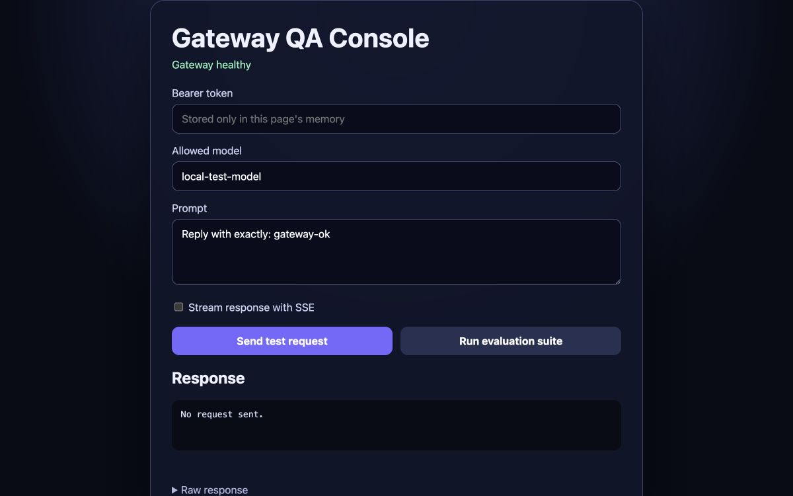

Сергей Гостов ◆ AI-системы / игровые миры
Сложную
идею —
в работающую
вещь.
Проектирую инструменты, которые можно проверить, и миры, в которые хочется вернуться.
ОТ ИДЕИ ДО РАБОЧЕГО СЦЕНАРИЯВИЗУАЛЬНАЯ МЕТАФОРА · НЕ СКРИНШОТ ПРОДУКТА
01 / ИнженерияСистема ценна,
Система ценна,
когда выдерживает
реальность.
Мне интересны не обещания модели, а действие после сбоя: что сохранилось, что можно проверить, что увидит человек. Поэтому рядом с каждым проектом — его работающий сценарий.
Избранная работа / AILocal Agent
Local Agent
Gateway
Шлюз для локального AI-помощника: управляет запросами, ограничивает доступ и позволяет увидеть результат проверки.
Открыть демонстрацию ↗На изображении — реальный экран проекта.GATEWAY / QA CONSOLE


ФотоДата
Попробовать редактор ↗
Psy AI Admin
Открыть демо ↗